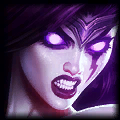

Habilidades
Pyke, el Destripador de los Puertos, es un campeón elegido para ser support. Sin embargo, bien podría ser un campeón de la jungla o de la calle central. Su kit de habilidades está muy enfocado a los tradeos en línea y a hacer mucho daño, mas que buscar aumentar la seguridad del ADC. Sus habilidades son:
- Pasiva: Bendición de los Ahogados.
- Q: Espetón de Huesos.
- W: Aguas Espectrales.
- E: Corriente Fantasma.
- R: De lo profundo.
Consejos
- Riot nos recomienda usar la W para escondernos de los enemigos, usando acto seguido la Q para asesinar o atraer a la víctima.En cambio, si queremos ser más agresivos tendríamos que comenzar con la E para dejar aturdido a nuestro objetivo, para rematarlo con su sangrienta habilidad definitiva.
- Si quieres saber si un arbusto tiene visión, utiliza la W. Si no te regenera vida es porque hay un centinela enemigo puesto en ese sector.
- Nunca intentes iniciar peleas con la E a menos de que estés muy seguro de lograr un asesinato, porque es su única habilidad de escape.
- La Q sirve para hacer que enemigos atraviesen muros, así que aprovechen cuando un oponente está mal posicionado.
- Puedes usar la definitiva para asegurar un asesinato para un compañero, en vez de que te lo lleves tú. La R siempre te va a llevar hacia el enemigo (si es que la pegas), y si usas la E hacia él e inmediatamente presionas la definitiva, Pyke caerá detrás del él, aturdiéndolo. Después de esto podrás usar el gancho con facilidad para atraerlo hacia tu equipo y que ellos puedan asegurar el asesinato.
Campeones counter de Pyke
Los siguientes campeones son bastante buenos contra Pyke:
Leona
Con una E de Leona + su Q + ignite + unos pocos ataques básicos del ADC, Pyke estaría muerto en cuestión de segundos. Leona es un campeón que con mucha facilidad puede soportar su daño y además meterle suficiente CC para que de tiempo a eliminarlo. Otra forma fácil es agarrar a Pyke con la E justo cuando venga el jungla. Si el jungla no está en planes de ir a ayudar a tu línea, hazle pin para que vaya.

Morgana
Aunque Morgana no es tanque y no va a aguantar tanto daño como los dos anteriores, esta con su escudo anti CC, puede evitar que Pyke pueda agarrar al ADC con la facilidad que normalmente lo hace, además de que puede contratacarlo con su Q eterna + el pozo.
Blitzcrank
De preferencia que tu ADC no pushee mucho, que solo se enfoque en dar el último golpe a los minions (last hit), de esa forma estarán siempre cerca de la torre de ustedes, en esa posición y con un buen jalón de Blitzcrank + el puño + un ignite + al menos un hit de la torre y dos basicos del ADC, Pyke estaría muerto fácilmente.

Taric
Si usas bien el ulti de Taric, puedes evitar que el ulti de Pyke le haga daño a tu aliado, además de que lo puedes contrarrestar con el stun protegiendo así al ADC y contratando a Pyke.